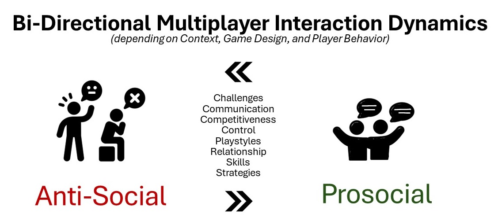
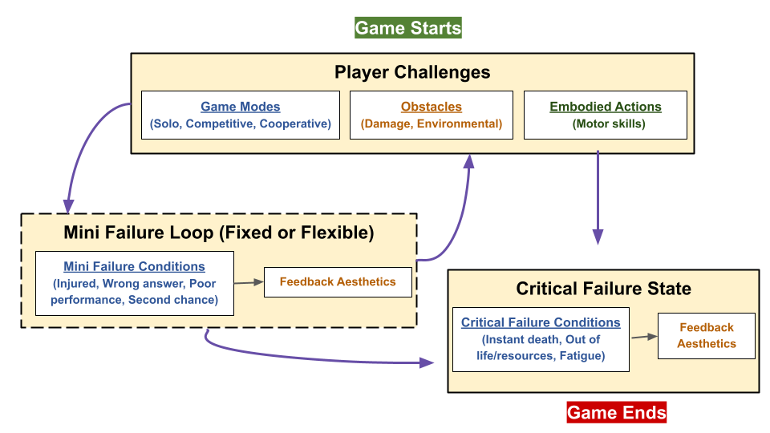
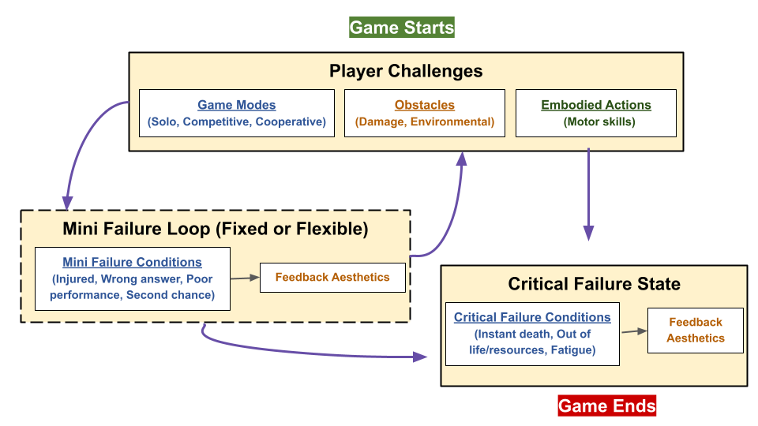

-
Emotional Challenge in Games & Reflection
Research Questions:
- How does emotional challenge in games relate to reflection?
- What affective game design patterns are important for reflective player experiences?
Publications Marjorie Cuerdo, Derusha Baskaran, and Edward Melcer. (2024). “Exploring how Emotional Challenge and Affective Design in Games Relates to Player Reflection". In Proceedings of the 19th Foundations of Digital Games Conference (FDG). ACM. AbstractEmotional challenge contrasts the common perspective of challenge in games, which focuses on performance. It instead presents players with heavy themes that induce complex emotions. To explore its impact on player experience, we examined the relationship between player reflection and affective game design patterns—conducting a survey with 53 respondents that prompted recalling an emotionally challenging situation in a video game. We then scored perceived emotional challenge ratings and coded the responses according to referenced affective game design patterns to categorize levels of reflection achieved. We found a significant difference (p < 0.011) in emotional challenge ratings and mean ranks increased across the five reflection groups, from lowest reflective level (non-reflective description) to highest (critical reflection). This demonstrates that the more emotionally challenged participants felt, the greater the depth of their reflection was. We also discovered the following design patterns to be prominently referenced in respective reflection levels: emotional decision-making, identification, and negative/uncomfortable feelings such as guilt.
-
(Anti)Social Challenge in Multiplayer Experiences
Research Question:
- How does playing a game with others affect one's emotional experience?
- What interaction patterns arise in emotionally challenging multiplayer experiences?
Publications Marjorie Cuerdo, Derusha Baskaran, Tsunghan Yang, and Edward Melcer. (2024). “(Anti)Social: Exploring Emotional Challenges in Multiplayer Experiences". In Proceedings of the 6th IEEE Conference on Games (CoG). IEEE. AbstractMultiplayer gaming research has most often been examined from a prosocial perspective due to its benefits in encouraging cooperative behaviors. Apart from online toxicity research, negatively-valenced dynamics are less studied. To explore these types of multiplayer experiences, we conducted an exploratory survey through the lens of what players considered "emotionally challenging" in their gaming experiences relating to the game's social, narrative, and difficulty elements. We discovered interaction patterns in recounted multiplayer experiences that we named prosocial and anti-social dynamics. We also found that it was common for multiplayer experiences to inspire reflection on one's decisions, skill level, playstyles, and relationships. We also found support for tandem play experiences. We argue that these findings reveal venues for further research into those topics to expand our knowledge on social-emotional challenges in multiplayer experiences.
-
Fail & Retry - Failure in Games & Player Experience

 

Research Questions:
- How is failure structured and expressed in platformer games?
- Can the Fail & Retry taxonomy be generalized to other game genres and platforms, such as embodied games in VR?
- Are there other aspects of challenge and/or failure in terms of design patterns to consider for VR?
- How do fail & retry mechanics relate to respective player experience constructs, such as mastery, challenge, autonomy, curiosity, and immersion?
- How do player orientation goal- and challenge- traits relate to the experience of failure in games?
Methods:
- 1. Observations
- 2. Qualitative Coding: Open, Axial, and Selective
- 3. Surveys, Quantitative Analysis
- 4. Game Design and Development
Publications
Marjorie Ann Cuerdo, Anika Mahajan, Josh Mao, and Edward Melcer. (2023). “Try Again?: A Macro-Taxonomy of the Challenge and Failure Process in Games". In 2023 IEEE Conference on Games (CoG). IEEE.Marjorie Ann Cuerdo. (2022). Fail and Retry: How Challenge Design in Platformer Games Relates to Player Experience and Traits" Master of Science Thesis. UC Santa Cruz.
Marjorie Ann Cuerdo, Anika Mahajan, and Edward Melcer. (2021). “Die-r Consequences: Player Experience and the Design of Failure through Respawning Mechanics". In 2021 IEEE Conference on Games (CoG). IEEE.Marjorie Ann Cuerdo and Edward Melcer. (2020). “’I’ll Be Back’: A Taxonomy of Death and Rebirth in Platformer Video Games”. In Extended Abstracts of the 2020 CHI Conference on Human Factors in Computing Systems. CHI '20, Honolulu, HI, USA. ACM.
Edward F. Melcer and Marjorie Ann M. Cuerdo. (2020). “Death & Rebirth in Platformer Games”. In Game User Experience and Player-Centered Design. Springer.
DescriptionFailure is a central aspect of almost every game, driving player perceptions of difficulty and impacting core aspects of game user experience. At the heart of failure in many game genres is player death, and platformer games in particular rely heavily on the use of death within their design. This work addresses the rich, underexplored space of in-game death/failure (and respawning) through the creation of a generalized taxonomy of failure in platformer games. The taxonomy consists of five notable dimensions of a cyclical nature: (1) obstacles, (2) failure/death conditions, (3) aesthetics, (4) player progress, and (5) reset/respawn locations. These different dimensions have a number of potential implications for key aspects of player experience and design. The taxonomy could also be used to help improve the effectiveness of related engagement techniques such as dynamic difficulty adjustment.
In addition to the original taxonomy, we developed the "Taxonomy of Challenge and Failure" to be extensible to other game genres and platforms. We observed various game genres in VR to find that there are three main components of challenge and failure: (1) player challenges, (2) mini failures, and (3) critical failures.
As for an experimental study, we explored how altering the consequences of death on player progress affected aspects of the player experience. Specifically, our research investigated the relationship of failure mechanics – the location of reset/respawn points – to player experience (PX) constructs, such as mastery, challenge, autonomy, curiosity, and immersion. We developed a simple 2D platformer game that only differed in reset point locations: the start of the game (permadeath), the start of a level, the last reached checkpoint, and the last manually saved point.
.png)